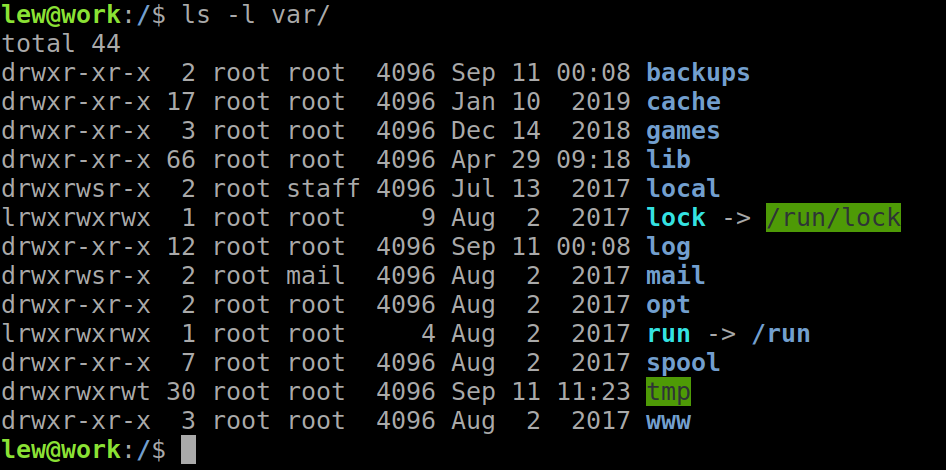

<!doctype html>
<html lang="sv">
<meta charset="utf-8" />
<title>vlinux kmom02</title>

<!-- Mithril HTML Slideshow styles -->
<link href="../../css/mithril-slideshow.css" rel="stylesheet" />

<!-- Code formatting using highlight.js -->
<link rel="stylesheet" href="../../css/default.css">
<link rel="stylesheet" href="../../css/tomorrow.css">
<script src="../../js/highlight.pack.js"></script>

<!-- Text formatting using Markdown through showdown.js -->
<script src="../../js/showdown.min.js"></script>

<style>
    @import url('https://fonts.googleapis.com/css2?family=Ubuntu+Mono&display=swap');
    h1 {
        border-bottom: 2px solid lime;
    }
    #slide {
        font-family: 'Ubuntu Mono', monospace;
        color: lime;
    }

    ul {
        list-style-type: none;
    }

    li:before {
        content: "$ ";
    }

    ul li ul li:before {
        content: "- ";
    }
</style>


<!-- Here comes the slides in order -->
<script data-role="slide" data-markdown type="text/html">
# vlinux - filesystem
### Kenneth Lewenhagen, dbwebb
</script>


<!-- Slide -->
<!-- <script data-role="slide" data-markdown type="text/html">
#Agenda

* Filstruktur
* Apache Virtual Host

</script> -->


<!-- Slide -->
<script data-role="slide" data-markdown type="text/html">
# File structure



</script>


<!-- Slide -->
<script data-role="slide" data-markdown type="text/html">
# / (root)

* Root of filesystem tree

</script>


<!-- Slide -->
<script data-role="slide" data-markdown type="text/html">
# /bin (binaries)

* "Executables"
* Available for everyone
* cp, rm, mv, ls

</script>


<!-- Slide -->
<script data-role="slide" data-markdown type="text/html">
# /boot

* Configuration for kernel and boot
* initrd - Temporary root filesystem
* vmlinuz - Compressed bootable kernel
* grub - manages system boot

</script>


<!-- Slide -->
<script data-role="slide" data-markdown type="text/html">
# /dev

* Files pointing on devices
* Everything is a file
* sd? = hdd
* urandom
    * "environmental noise"

</script>


<!-- Slide -->
<script data-role="slide" data-markdown type="text/html">
# /etc

* Configuration files for system/programs

</script>


<!-- Slide -->
<script data-role="slide" data-markdown type="text/html">
# /home

* Home folders for non-root users

</script>


<!-- Slide -->
<script data-role="slide" data-markdown type="text/html">
# /lib, /lib32, /lib64

* lib-files for system

</script>


<!-- Slide -->
<script data-role="slide" data-markdown type="text/html">
# /lost+found

* Saved files at crash
* Do not touch!

</script>


<!-- Slide -->
<script data-role="slide" data-markdown type="text/html">
# /media

* Automatic mounting for removable devices (ex. USB)

</script>


<!-- Slide -->
<script data-role="slide" data-markdown type="text/html">
# /mnt

* Mounting of filesystem, hdds

</script>


<!-- Slide -->
<script data-role="slide" data-markdown type="text/html">
# /opt

* Mixed third-party software, not via dpkg, apt

</script>


<!-- Slide -->
<script data-role="slide" data-markdown type="text/html">
# /proc

* Virtual filesystem for resources, processes etc
* Only exists when system is on
* Information center for the kernel - communicates userspace
* <code>$ cat /proc/1/limits</code>

</script>


<!-- Slide -->
<script data-role="slide" data-markdown type="text/html">
# /root

* Home folder for root-user

</script>


<!-- Slide -->
<script data-role="slide" data-markdown type="text/html">
# /sbin

* /bin but for sysadmin

</script>


<!-- Slide -->
<script data-role="slide" data-markdown type="text/html">
# /tmp

* Temporary, erased at reboot

</script>


<!-- Slide -->
<script data-role="slide" data-markdown type="text/html">
# /usr

* Mini-root (/)
* Each users programs
* /usr/bin runs over /bin
* $PATH look in /bin last

</script>


<!-- Slide -->
<script data-role="slide" data-markdown type="text/html">
# /var (variable)

* System writes data at runtime
* /var/log/ - all logfiles

</script>


<!--
<script data-role="slide" data-markdown type="text/html">
# Apache Virtual Hosts
* Vhost
* Kör flera webbplatser (domäner) på en ipadress (server)
</script> -->


<script data-role="slide" data-markdown type="text/html">
# The end
</script>


<!-- include essential js-script -->
<script src="../../js/mithril.min.js"></script>
<script src="../../js/mithril-slideshow.js"></script>
<!-- default to theme 3 -->
<script>app.useTheme(3);</script>

</html>
